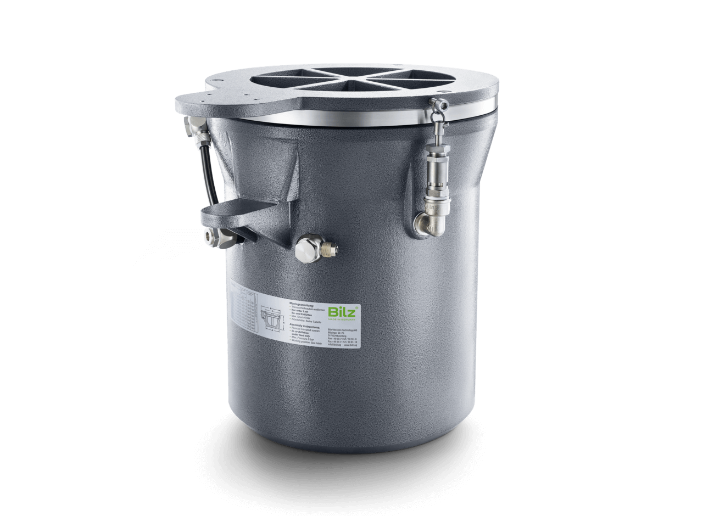

Bardzo niskoczęstotliwościowy miech membranowy — izolacja drgań już od 1,7 Hz, do najbardziej wrażliwych urządzeń.
BiAir ED-HE to bardzo niskoczęstotliwościowy membranowy wibroizolator pneumatyczny (częstotliwość własna w kierunku pionowym 1,7 Hz) z precyzyjnie regulowanym stopniem tłumienia. Korpus wykonano z aluminium odlewanego.
Obniżona częstotliwość własna zapewnia jeszcze skuteczniejszą izolację mikrodrgań niż wersja standardowa — dlatego ED-HE stosuje się pod najbardziej wrażliwe urządzenia: współrzędnościowe maszyny pomiarowe (CMM), tomografy komputerowe, mikroskopy skaningowe i inną aparaturę precyzyjną. Dwukomorowy układ z regulowanym zaworem dławiącym pozwala ustawić tłumienie do 15%, a częstotliwość własna pozostaje niezależna od obciążenia.

| Częstotliwość własna (pionowo) | 1,7 Hz |
|---|---|
| Częstotliwość własna (poziomo) | 2,8 Hz |
| Nośność | 2 670–65 730 N przy 4 bar; 4 000–98 600 N przy 6 bar |
| Dostępne typy | 0.5, 1, 1.5, 2, 2.5, 3, 4 |
| Maks. wysokość robocza | 307 mm |
| Skok | ±2,5 do ±3,5 mm |
| Tłumienie | regulowane do 15% |
| Materiał | aluminium odlewane |
| Wykończenie | malowane proszkowo RAL 7037 (szarość pylista) |
| Zakres temperatur | −20 °C do +80 °C |
Częstotliwość własna jest niezależna od obciążenia. Bardzo niska częstotliwość 1,7 Hz czyni ED-HE rozwiązaniem do izolacji odbiorczej najbardziej wrażliwych urządzeń pomiarowych i badawczych. Pomożemy dobrać typ do obciążenia i wymaganej izolacji.
Pomożemy dobrać właściwy typ i rozmiar wibroizolatora pneumatycznego do Twojej maszyny i obciążenia.
BiAir ED-HE to membranowy wibroizolator antywibracyjny z aluminium odlewanego o bardzo niskiej częstotliwości własnej 1,7 Hz w kierunku pionowym. Tak skuteczna izolacja mikrodrgań predysponuje go do izolacji odbiorczej najbardziej wrażliwych urządzeń: współrzędnościowych maszyn pomiarowych (CMM), tomografów komputerowych i mikroskopów skaningowych. Oficjalnym przedstawicielem Bilz w Polsce jest firma EKKON z Olsztyna.